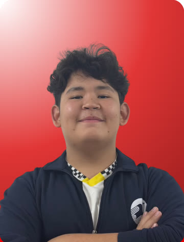
Омиржан Базарбай
Капитан

FIRST LEGO League Challenge · команда #310508 · Aqtobe BIL
Команда робототехники из Актобе. Мы строим и программируем роботов на LEGO SPIKE Prime, исследуем настоящие проблемы и делимся опытом с командами из других стран.
Наша команда появилась из интереса учеников к технике и программированию. Сначала собрались всего несколько ребят и начали строить простых роботов. Со временем к нам присоединялись новые участники, мы учились друг у друга, а благодаря поддержке наставника и общей работе команда выросла и начала выступать на соревнованиях.
Сегодня AqSonix — это место, где объединяются дружба, знания и новые идеи. Вместе с ещё тремя командами Aqtobe BIL мы — четыре команды, одна большая семья.
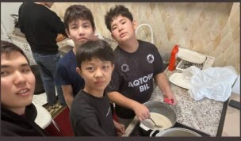

Капитан
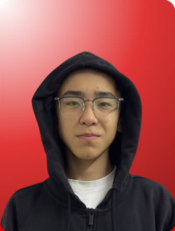
Менеджер, спикер

Менеджер
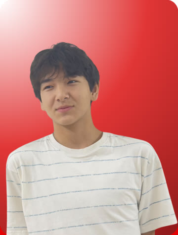
Конструктор

Программист

Дизайнер
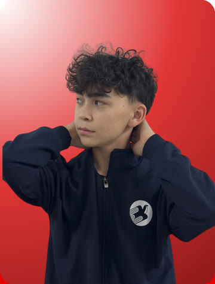
Дизайнер
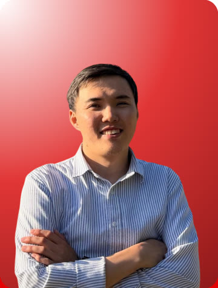
Наставник


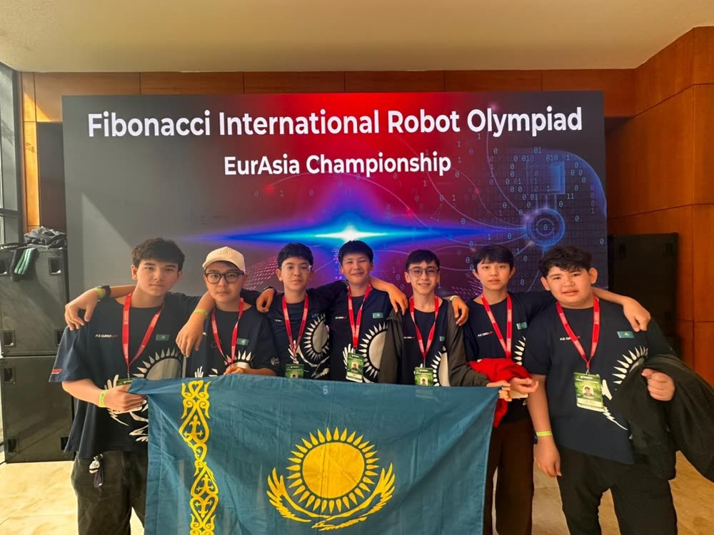

В сезоне UNEARTHED мы получили Engineering Excellence Award (награду за инженерное мастерство) на Batys Robotics & Drones Championship 2026, а в феврале 2026 года на Central Asia FIRST Championship на Alem Techfest получили Technical Excellence Award — выступали в красно-белой форме AqSonix, с флагом команды и в костюмах Among Us.
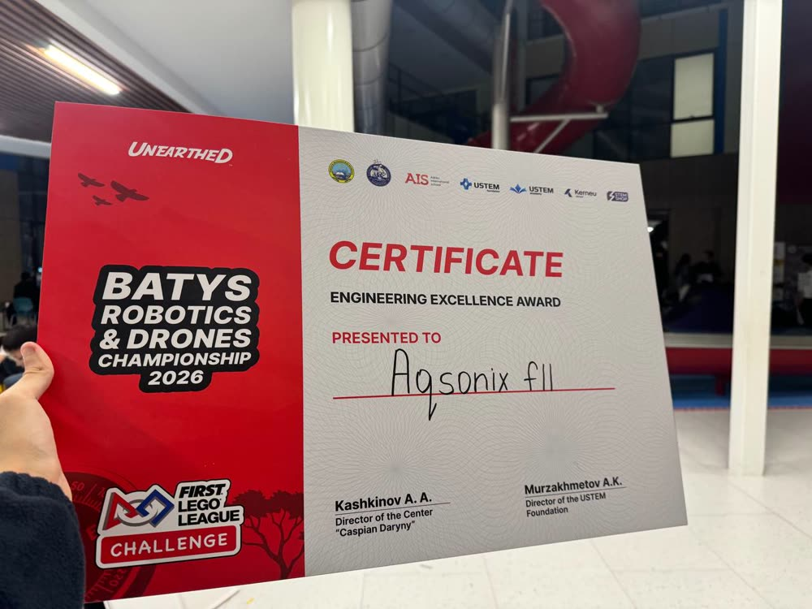
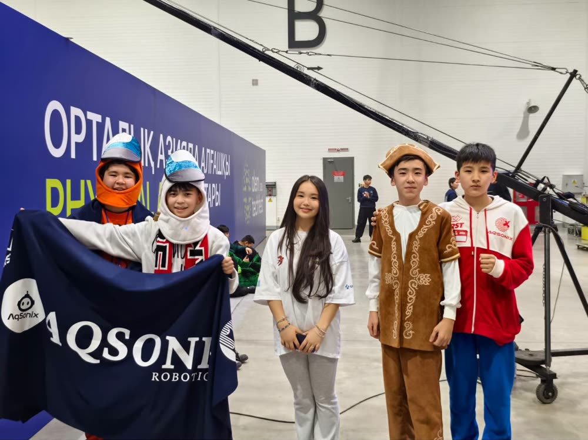

22–26 апреля 2026 года наши команды представляли Казахстан на чемпионате Евразии международной олимпиады роботов Fibonacci в Анталье.
Команды средней школы: Ескендир Танкиев, Толеген Хажиолиев, Абубакр Габит, Султан Ахмет. Наставник — Есенали Бисенгалиев.

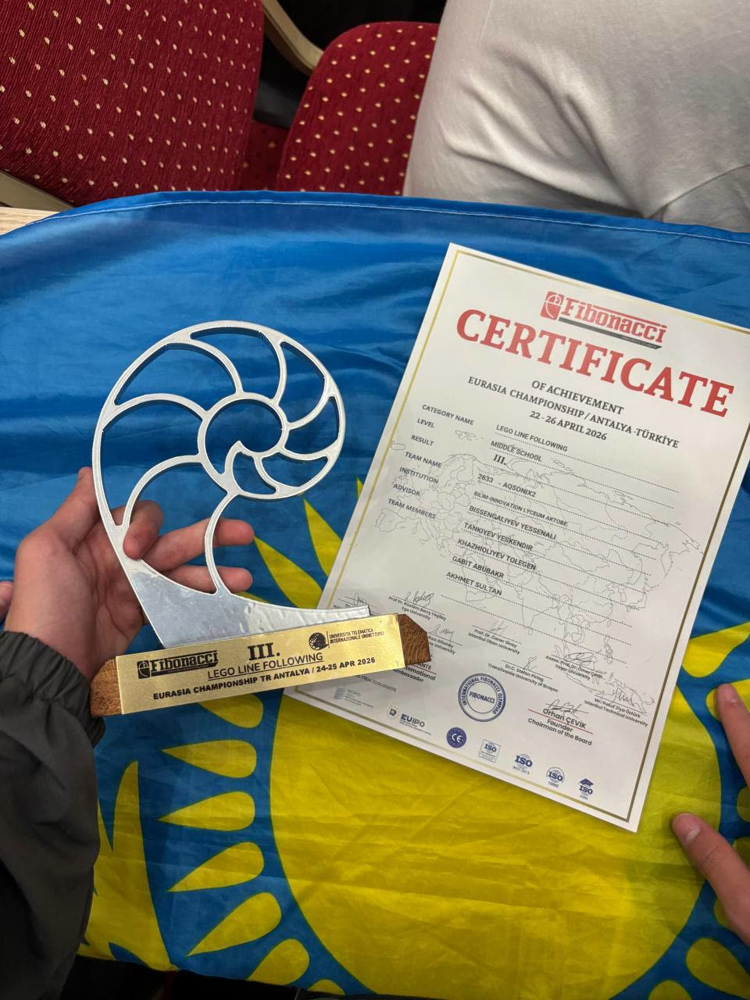
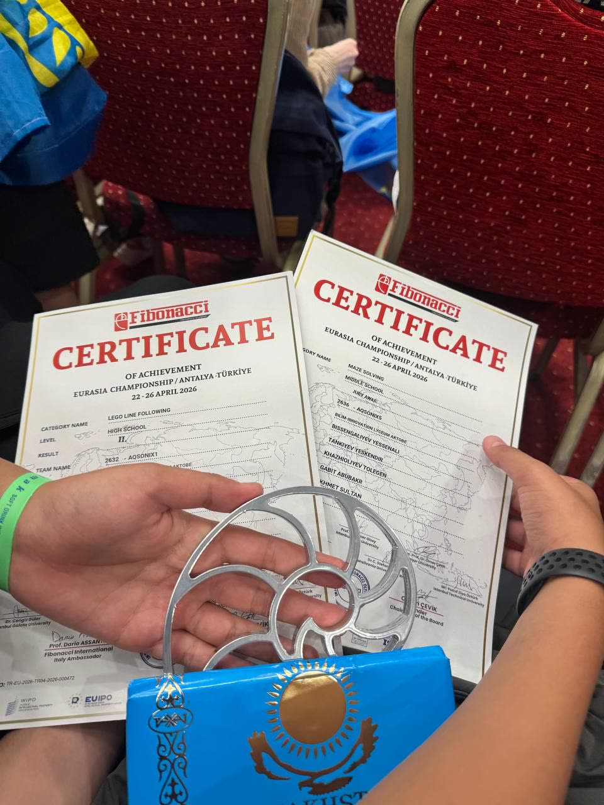

Ценности FIRST — это то, как мы работаем. Победа важна, но не менее важно учиться новому, помогать другим и делиться опытом. На FIRST Aqtobe Regional наша команда стала финалистом Core Values Award.
Мы исследуем новое и учимся у экспертов и друг у друга.
Наш пример: чтобы узнать больше об археологии для проекта, мы провели онлайн-встречу с археологом, а во время сборов ходили в музеи.
Мы используем творчество и упорство, чтобы решать задачи.
Наш пример: мы постоянно изучаем и внедряем новые технологии и улучшаем код робота от версии к версии.
Мы применяем то, чему научились, чтобы сделать мир лучше.
Наш пример: мы наставники для более чем половины команд Актобе, продвигаем робототехнику в школах и мечтаем создать академию робототехники.
Мы уважаем друг друга и ценим различия.
Наш пример: мы общаемся с командами из разных стран, в апреле 2026 года встретились с ними вживую на чемпионате Fibonacci в Анталье и вовлекаем всё больше учеников в STEM-образование.
Вместе мы сильнее.
Наш пример: перед областным этапом мы провели 7-дневные сборы, в которых участвовали больше 10 человек.
Мы получаем удовольствие от всего, что делаем.
Наш пример: мы не только тренируемся, но и вместе готовим, празднуем и выходим на сцену Central Asia FIRST Championship в костюмах Among Us.
Чтобы обмениваться опытом, наши ученики провели онлайн-встречи с командами FIRST LEGO League из других стран, в том числе из Японии и Турции. Мы рассказывали о своём роботе и проекте, задавали вопросы, делились идеями и находили друзей по всему миру. Так мы на практике проявляем Discovery, Inclusion и Teamwork.


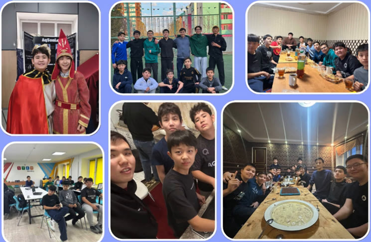

Чтобы получать удовольствие от работы и достигать успеха, мы остаёмся верны нашим ключевым ценностям.
Победа — главная цель, но получить новые знания и опыт не менее важно.
Наша главная задача — вдохновить учеников средних и старших классов изучать робототехнику и осваивать STEM-навыки.
Наш робот собран на LEGO SPIKE Prime. Конструкция компактная и прочная, чтобы робот точно проходил маршрут по полю сезона UNEARTHED.
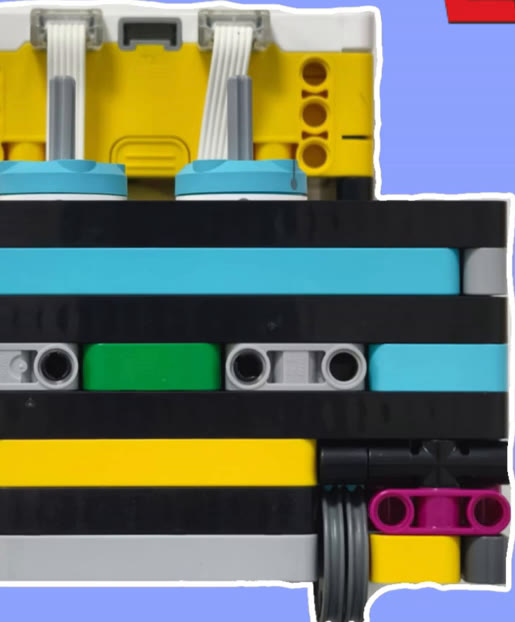
Миссии на поле разбиты на несколько заездов: каждый цвет на схеме — отдельный заезд, цифры — порядок точек маршрута.

Мы программируем робота на Python в LEGO SPIKE App. Главное в нашем коде — точные повороты по гироскопу.
Повороты и перевод расстояния в градусы вынесены в функции turn, turn50, turn100 и deg: их легко переиспользовать в каждом заезде.
Перед поворотом робот сбрасывает угол гироскопа и ждёт, пока датчик стабилизируется, а потом поворачивается до нужного угла.
Для разных миссий есть быстрый поворот turn100 (скорость 400) и медленный точный turn50 (скорость 70).
from hub import motion_sensor, port
import motor_pair, runloop, sys, motor
motor_pair.pair(motor_pair.PAIR_1, port.A, port.B)
def deg(distance):
# сантиметры → градусы поворота колеса (окружность 17,5 см)
return int((distance / 17.5) * 360)
async def turn(rotation):
motion_sensor.reset_yaw(0)
await runloop.until(motion_sensor.stable)
if rotation > 0:
while motion_sensor.tilt_angles()[0] < rotation * 10:
motor_pair.move_tank(motor_pair.PAIR_1, -200, 200)
motor_pair.stop(motor_pair.PAIR_1)
if rotation < 0:
while motion_sensor.tilt_angles()[0] > rotation * 10:
motor_pair.move_tank(motor_pair.PAIR_1, 200, -200)
motor_pair.stop(motor_pair.PAIR_1)
async def turn50(rotation):
motion_sensor.reset_yaw(0)
if rotation > 0:
while motion_sensor.tilt_angles()[0] < rotation * 10:
motor_pair.move_tank(motor_pair.PAIR_1, -70, 70)
motor_pair.stop(motor_pair.PAIR_1)
if rotation < 0:
while motion_sensor.tilt_angles()[0] > rotation * 10:
motor_pair.move_tank(motor_pair.PAIR_1, 70, -70)
motor_pair.stop(motor_pair.PAIR_1)Тема сезона — UNEARTHED: археология и то, как люди находят и изучают прошлое. Название нашего проекта.
Какую проблему археологов мы нашли и почему она важна.
Мы провели онлайн-встречу с археологом, чтобы узнать, как устроена его работа, и посетили музеи во время сборов.
Что мы придумали и чем это решение новое.
Как проверяли идею и что улучшили.
Мы рассказываем о проекте в Instagram и на встречах с командами из других стран, а также…